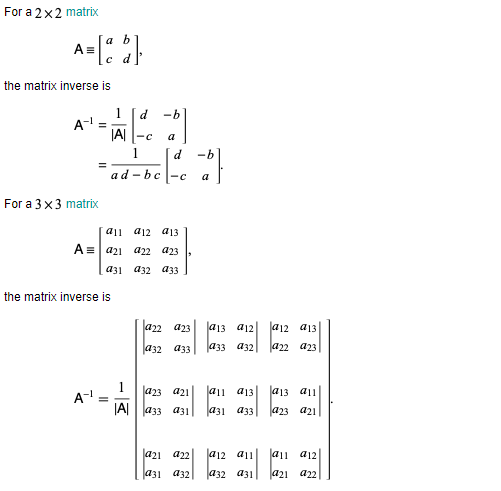
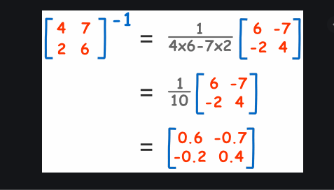

Inverse
The inverse of a square matrix A, sometimes called a reciprocal matrix, is a matrix A(-1) such that
AA(-1)=I, .........(1)
where I is the identity matrix. Courant and Hilbert (1989, p. 10) use the notation A^_ to denote the inverse matrix.
A square matrix A has an inverse iff the determinant |A|!=0 (Lipschutz 1991, p. 45). The so-called invertible matrix theorem is major result in linear algebra which associates the existence of a matrix inverse with a number of other equivalent properties. A matrix possessing an inverse is called nonsingular, or invertible.
The matrix inverse of a square matrix m may be taken in the Wolfram Language using the function Inverse[m].

A general n×n matrix can be inverted using methods such as the Gauss-Jordan elimination, Gaussian elimination, or LU decomposition.
The inverse of a product AB of matrices A and B can be expressed in terms of A^(-1) and B^(-1). Let
C=AB. .........(7)
Then
B=A(-1)AB=A(-1)C ........(8)
and
A=ABB(-1)=CB(-1). ......(9)
Therefore,
C=AB=(CB(-1))(A(-1)C)=CB(-1)A(-1)C, .........(10)
so
CB(-1)A(-1)=I, ...........(11)
where I is the identity matrix, and
B(-1)A(-1)=C(-1)=(AB)(-1).
Example:
